Distributed Transactions Explained: 2 Phase Commit vs Saga Pattern
How do you keep an order correct when payment, inventory, and accounting use separate databases? Evan King explains two-phase commit, the saga pattern, and the reliability work behind cross-service workflows.
By Evan King — Hello Interview14 min 46 s original recordingPublished 5 May 2026
The talk starts with an order that needs three writes: a payment record, an inventory reservation, and a ledger entry. When they share one database transaction, the database handles the local commit or rollback.
Two ACID properties matter to the example:
Atomicity: all three writes commit, or none do.
Isolation: concurrent work is protected from intermediate transaction state. The talk illustrates this with a balance query that must not see a charge for an unfinished order.
The useful starting point is the transaction boundary: the database can coordinate the writes inside it. The next problem begins when those writes move into independent databases.
Sharding or splitting a monolith can place payment, inventory, and accounting on separate machines. Each database can still provide local transactions, but one local rollback no longer covers the whole order.
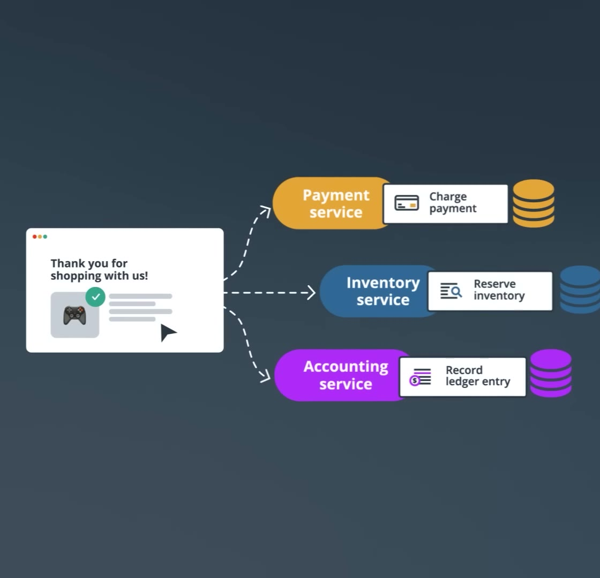
01:40 — One order spans three services and their databases.
Suppose payment commits and inventory then reports that the item is out of stock. Rolling back inventory does not undo the committed payment. The application must coordinate the outcome across services.
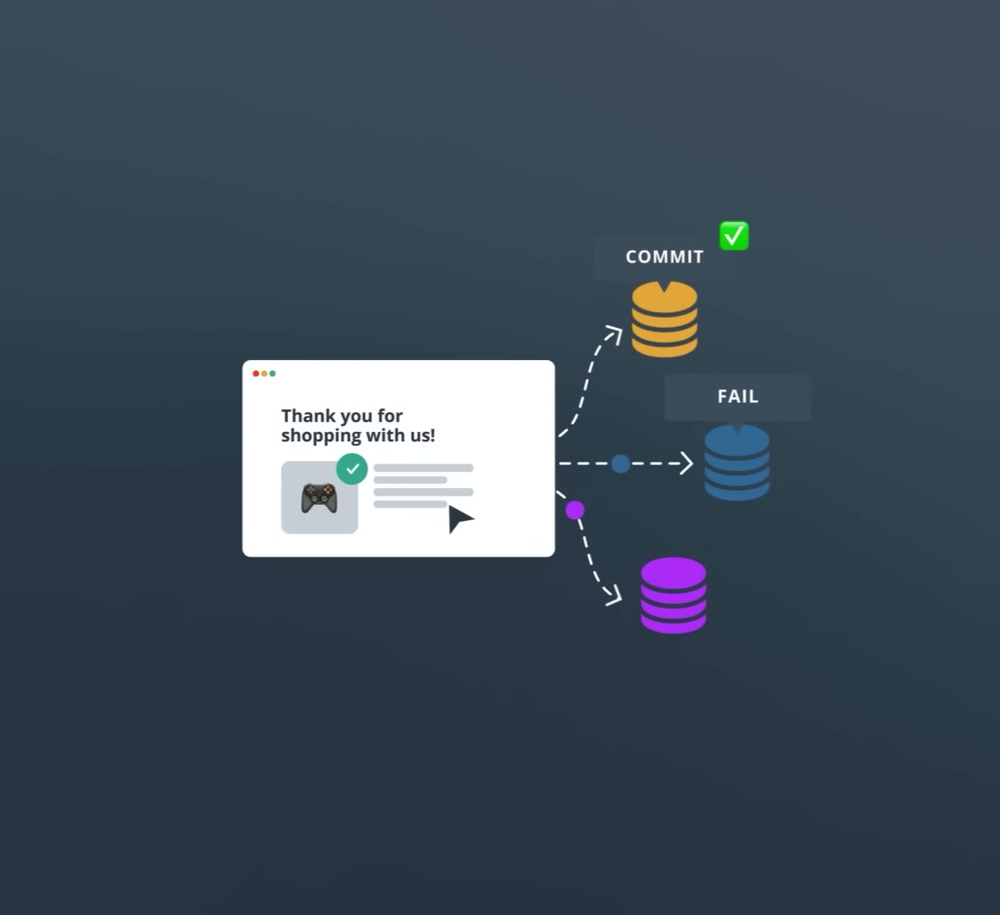
01:50 — Payment commits; inventory fails. A local transaction cannot undo another database’s committed work.
This is the talk’s distributed-transaction problem: one logical operation spans independent stores, and its steps must either succeed together or be cleaned up after failure. The two approaches are two-phase commit and a saga.
Two-phase commit (2PC) introduces a coordinator to collect votes and decide whether all participants commit or abort.
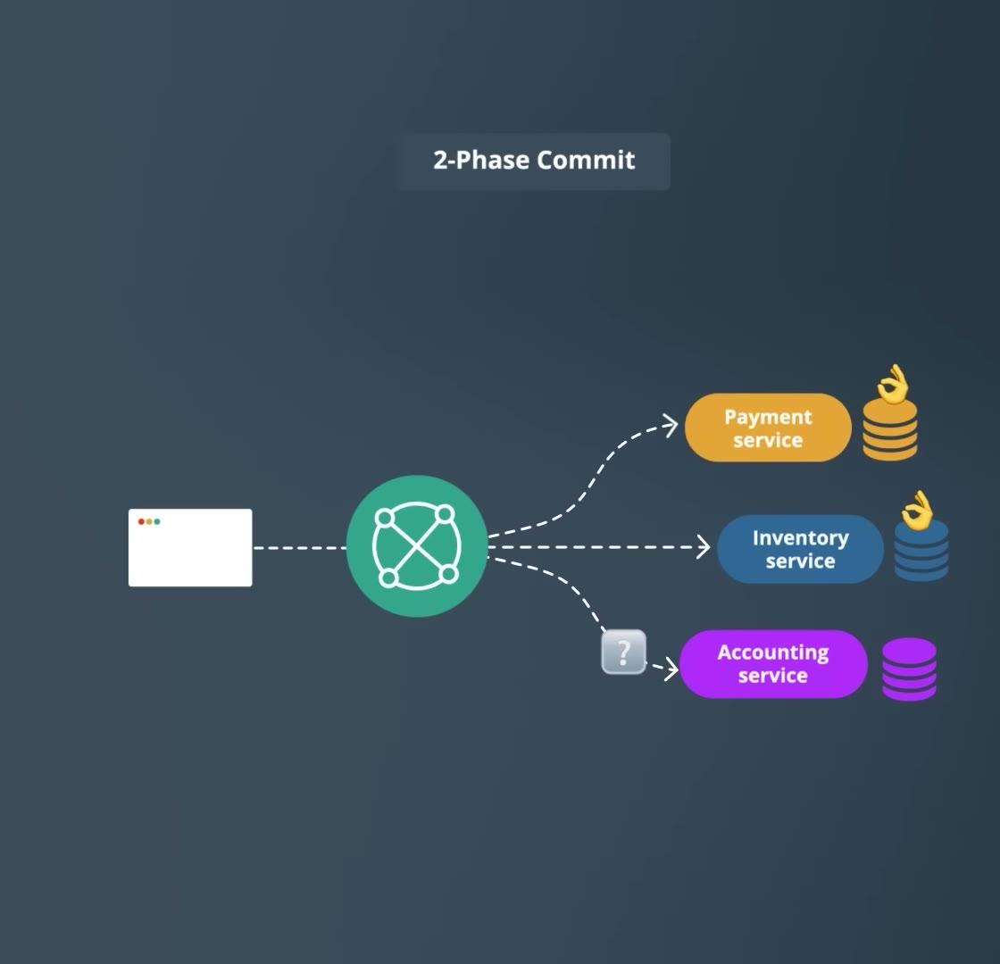
02:45 — The coordinator communicates with every participant.
Prepare: the coordinator asks each participant whether it can commit. In the talk’s example, each prepares its changes, records enough state to survive a crash, locks the affected rows, and votes yes or no.
Decide: if everyone votes yes, the coordinator records a commit decision and sends it to the participants. Otherwise it decides to abort. Participants complete that decision and release their locks.
A yes vote is a promise to follow the final decision. The participant must keep its prepared work safe while waiting; it cannot treat prepare as a trial run and discard it whenever convenient.
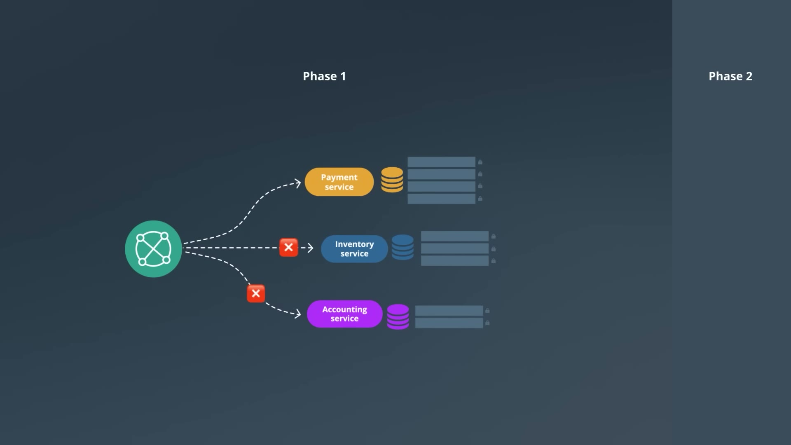
03:20 — Prepare and vote. A no vote leads to abort; prepared records remain locked until the outcome is resolved.
2PC concerns agreement on commit or abort. Its key safety property is that participants do not reach conflicting final outcomes. See Gray and Lamport’s Consensus on Transaction Commit.
The cost of classic 2PC is that a participant can be healthy yet unable to finish. In the talk’s locking example, the wait also blocks other transactions that need the same rows.
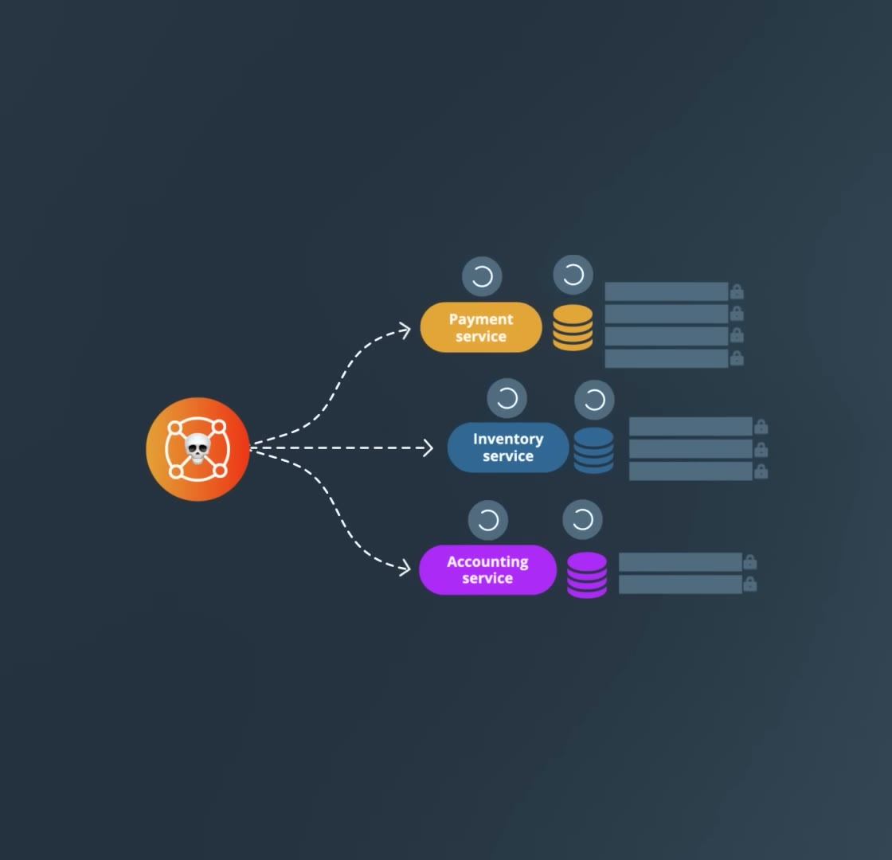
04:40 — The coordinator crashes while participants retain prepared records and locks.
Failure
What happens
Coordinator crash
A participant that voted yes may not know the final decision. Committing or aborting alone risks disagreeing with other participants, so it can remain blocked.
Slow participant
Others wait with locks held. The talk’s example is a ledger service taking ten seconds to respond.
Network partition
Lost communication can leave prepared participants uncertain about the outcome. A timeout alone does not tell them which decision was made.
Evan uses these failure modes to argue against building 2PC across independently deployed services. He points to Pat Helland’s Life Beyond Distributed Transactions for the broader case for workflows across autonomous systems.
The talk names Spanner and YugabyteDB as distributed databases that manage transaction coordination internally. The application relies on the database’s recovery machinery. This differs from implementing a coordinator across separate services. Supplemental references: Spanner’s transaction walkthrough and YugabyteDB’s transaction architecture.
A saga splits the operation into a sequence of local transactions. Each service commits its own step. If a later step fails, the application runs compensating actions for work already completed.
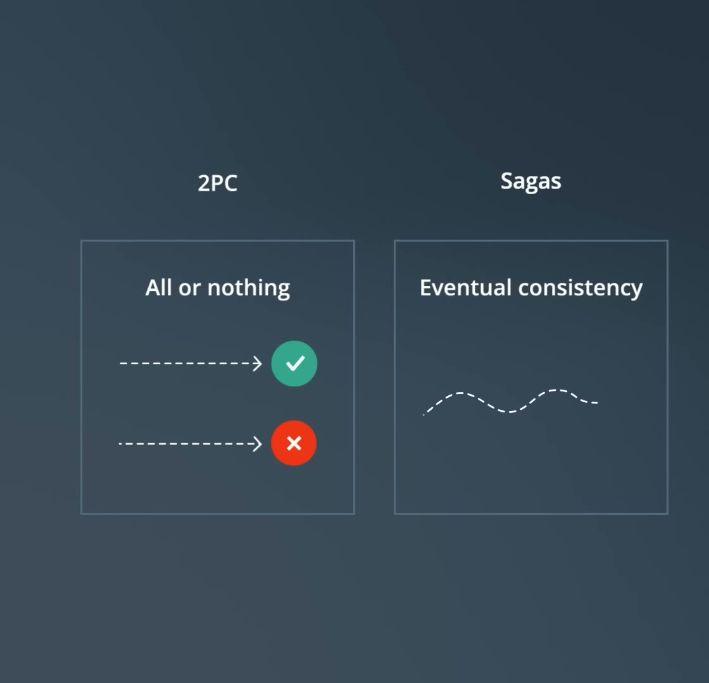
06:10 — The trade-off: coordinated atomic commit versus local commits and eventual consistency.
For the order example, payment commits first. If inventory cannot reserve the stock, the saga requests a refund. It does not roll back the already committed payment transaction.
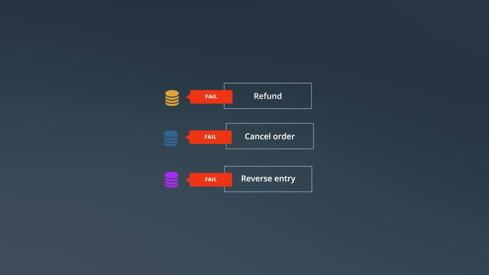
06:50 — Business-level compensation: refund a payment, cancel an order, or reverse a ledger entry.
The customer may see a charge followed by a refund. Other work can continue without waiting for a single transaction to span the whole workflow, but the application must track unfinished steps and complete their recovery.
Compensation need not restore the exact earlier state, and a saga does not provide transaction-wide isolation. Other transactions can observe its partial results. These limitations are described in the original Sagas paper and Richardson’s Saga pattern.
The coordination choice determines who starts the next step, detects failures, and requests compensation.
Choreography: services react to events
Payment publishes CardCharged; inventory reacts, reserves stock, and publishes InventoryReserved; accounting reacts by writing the ledger entry. A failure event tells earlier services to compensate.
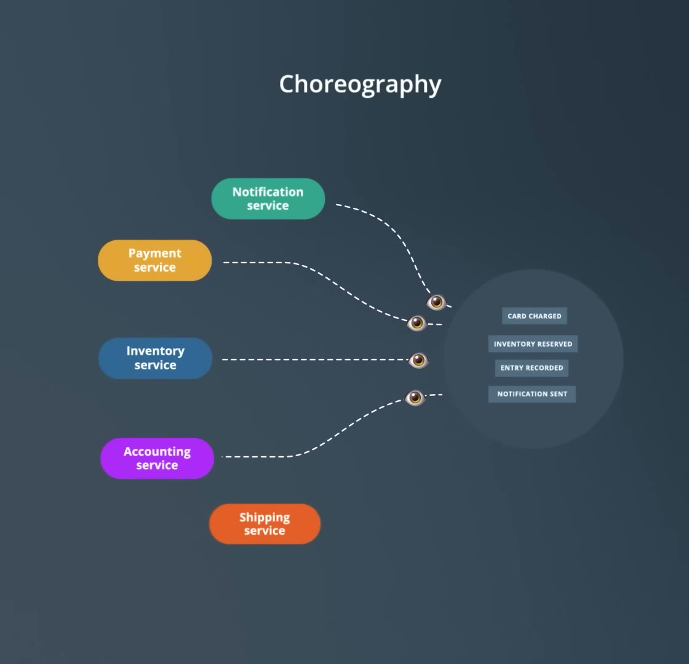
08:15 — Choreography: services publish and react to events without a central workflow controller.
This is simple for a short flow of independent reactions. As the flow grows, understanding which step failed and whether compensation finished requires tracing work across services. The talk’s “two or three steps” guideline is a rule of thumb.
Orchestration: one component directs the workflow
An orchestrator sends commands, waits for results, records progress, and chooses the next step or compensation. The flow and its failure handling are defined in one place. Evan names Temporal and AWS Step Functions as tools used for this style.
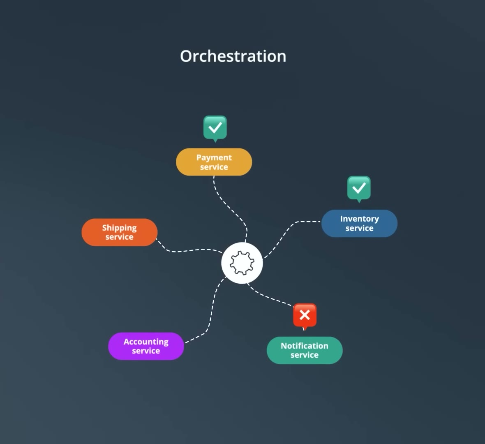
08:55 — Orchestration: one component tracks the workflow and directs participants.
What happens when it crashes?
A durable saga orchestrator restores its saved workflow state and resumes. Participants have already committed their local transactions; they do not retain prepared database locks across the entire saga while the orchestrator recovers. By contrast, a classic 2PC coordinator failure can leave participants waiting with those locks held.
The distinction to remember: the saga stores progress between committed steps; 2PC coordinates a shared commit decision.
Sagas move complexity into failure handling. A compensation is a real business operation, so design it as carefully as the forward step.
It can be visible: a customer may receive separate charge and refund notifications.
It can be imperfect: you cannot unsend an email or guarantee that a third party processes a cancellation.
It can fail: a refund API outage requires retries.
Retries can duplicate effects: the refund must be idempotent, so repeating the same operation does not issue another refund.
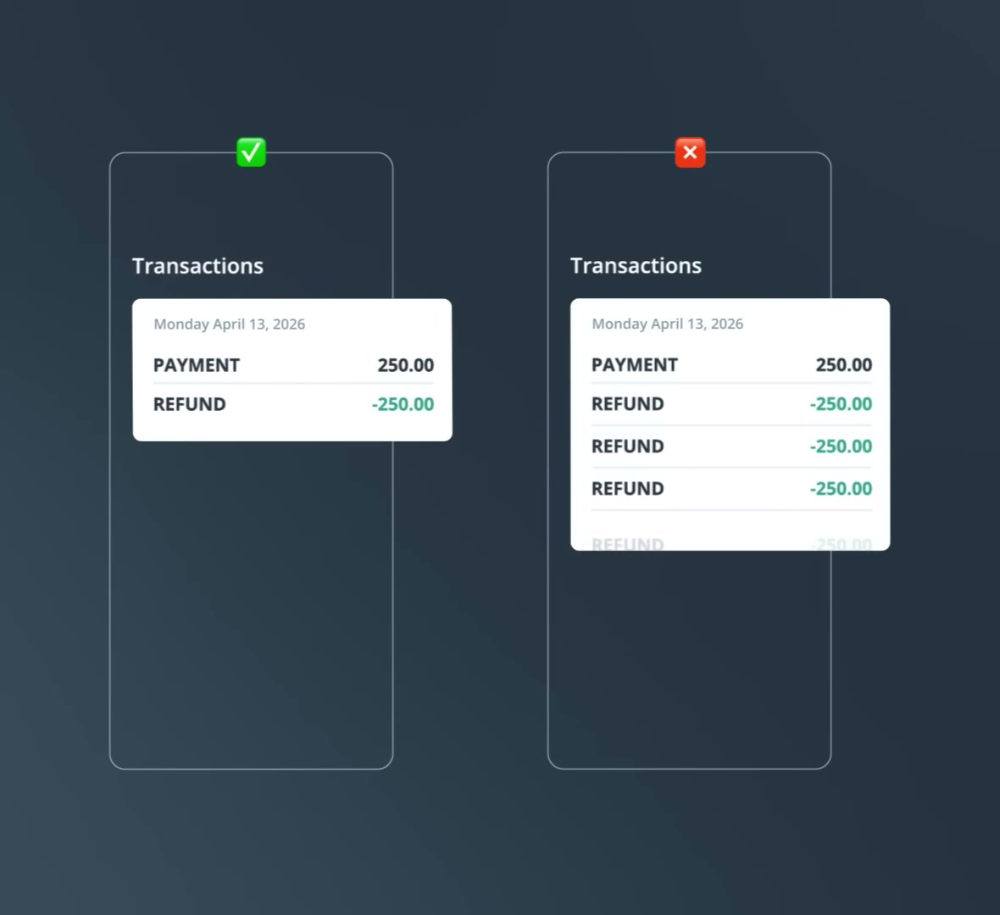
11:00 — Idempotency: a retried refund should produce one refund, rather than three.
Keep the same identity across retries
Use an idempotency key to identify one logical operation. Every retry of that operation reuses the key. A new key on every attempt makes the requests look like separate operations.
Illustrative request header — added example
Idempotency-Key: 8f14e45f-ceea-467a-9a3d-1b2c3d4e5f60
# Save this key for the refund step and reuse it on retries.
Before adding a step, identify its compensation, who can observe it, how failed attempts will be retried, and how duplicates will be recognised. The same care applies to forward actions such as charging a customer.
A service often needs to save its result and publish an event so the next service can proceed. Those are two writes to separate systems:
Database commits, publish fails: the next step never hears about the change.
Publish happens before the database commits, then the commit fails: downstream services react to a change that was not saved.
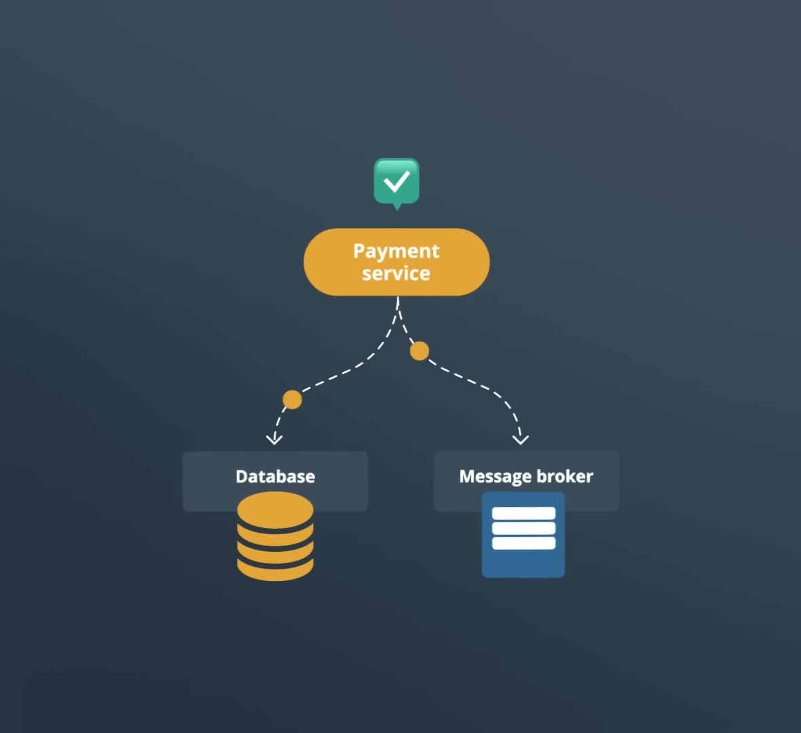
11:30 — The dual write: the database update and broker publish can fail independently.
Save the event with the business data
The transactional outbox writes the business change and an outgoing event into the same database transaction. Both are saved, or neither is. A background relay later publishes committed outbox events to the broker.
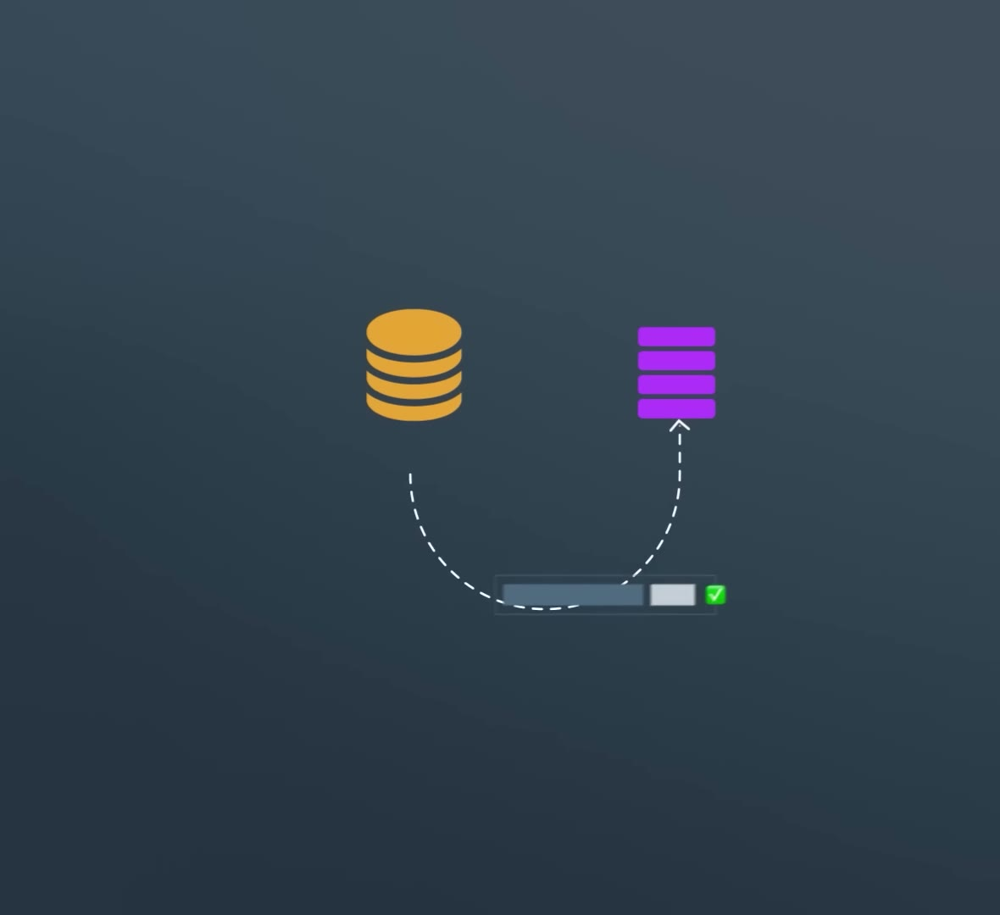
12:11 — The outbox: business data and the outgoing event commit together in one database.
Adapted SQL sketch — not code from the video
BEGIN;
INSERT INTO orders (id, status, amount) VALUES ($1, 'PAID', $2);
INSERT INTO outbox (id, aggregate_id, event_type, payload)
VALUES (gen_random_uuid(), $1, 'OrderPaid', $3::jsonb);
COMMIT;
-- A relay publishes committed outbox rows, then marks them sent.
Illustrates Richardson’s Transactional Outbox pattern. Table definitions and relay implementation are omitted.
The video gives two relay options: change data capture (CDC), which reads the database transaction log, or periodic polling of the outbox table.
The relay can publish an event and crash before marking it sent. After restart, it may publish that event again. Carry the event ID so consumers can recognise duplicates and avoid repeating the effect. The outbox closes the database-to-event gap; it does not eliminate duplicate delivery. See the outbox pattern’s delivery caveat.
Before choosing a distributed pattern, ask: can the data that must change together live in the same database? The talk suggests keeping payment, inventory, and ledger tables together when that boundary fits the system.
A local transaction avoids the cross-service compensation and messaging machinery described above. Make the boundary decision early, because changing it after services have grown apart is harder.
If the operation genuinely spans independent services, choose coordination based on its needs:
Need
Direction from the talk
A few independent event reactions
Choreography can be a simple starting point; for example, an order event triggering notifications.
Branching, tricky compensation, or a clear view of stuck work
Orchestration keeps the workflow and recovery decisions together.
Strong transactional guarantees for the data
Consider whether it can live in one distributed database that manages coordination internally.
These are design guidelines, rather than a service-count threshold. The question is whether the chosen approach makes both the normal flow and failure recovery understandable.
The talk finishes with an orchestrated saga, idempotent operations, and a transactional outbox. Each handles a different failure:
Piece
Responsibility
Durable orchestration
Track completed steps, resume after crashes, and direct compensation.
Idempotent operations
Keep retries and duplicate deliveries from repeating business effects.
Transactional outbox
Save outgoing events atomically with local business changes, then relay them.
The trade-off is accepting visible intermediate states and taking responsibility for recovery. A saga does not turn separate services into one ACID transaction.
Check your recall
Try answering before revealing the explanation.
Q1.Why can a prepared 2PC participant remain blocked after a coordinator crash?
It voted yes but may not know the recorded decision. Deciding alone risks committing while another participant aborts, or the reverse. In the talk’s example, its locks remain held while the outcome is unresolved.
Q2.How does a compensation differ from a rollback?
Compensation is a new business action for already committed work, such as a refund. It can be visible, fail, or leave a different history from the original state. A rollback discards the local transaction’s uncommitted changes.
Q3.Why does a refund retry need the same idempotency key?
The key identifies one logical refund. Reusing it lets the receiver recognise a retry; changing it makes the attempts look like separate refunds.
Q4.Does an outbox remove the need for idempotent consumers?
No. The data and event commit together, but the relay may publish twice if it crashes before marking an event sent. Consumers still need to recognise duplicate events.
Essential terms
ACID
Atomicity, consistency, isolation, and durability: the four transaction properties.
Atomicity
All changes in a transaction commit, or none do.
Isolation
Protection from interference between concurrent transactions; sagas lack transaction-wide isolation.
2PC
A coordinator collects prepare votes, then decides commit or abort.
Participant
A database or service taking part in the coordinated transaction.
In-doubt transaction
Prepared work whose final commit or abort outcome is not yet known.
Saga
A coordinated sequence of local transactions with compensation for failed flows.
Compensation
A business action that offsets committed work, such as a refund.
Eventual consistency
Intermediate states may differ while work and recovery progress toward a consistent result.
Choreography
Services advance the workflow by reacting to events.
Orchestration
A central workflow component directs steps and recovery.
Idempotency
Repeating the same operation does not repeat its business effect.
Transactional outbox
Outgoing events saved in the same local transaction as business changes.
CDC
Change data capture; here, reading committed changes from the database transaction log.
Quick reference
First question
Can the data that changes together share a local transaction?
2PC
Prepare and vote → commit or abort. A failure can leave prepared participants waiting with locks held.
Saga
Commit each step locally. Compensate completed steps when later work fails; intermediate effects can be visible.
Coordination
Choreography for simple reactions; orchestration for branching, visibility, and coordinated recovery.
Retries
Make forward steps and compensations idempotent. Reuse the operation’s identity across attempts.
Outbox
Save data and event together → relay later → deduplicate at the consumer.
The explanations follow the recording; screenshots are captured slides. Supplemental caveats and adapted examples are labelled in place. The recording contains no code.